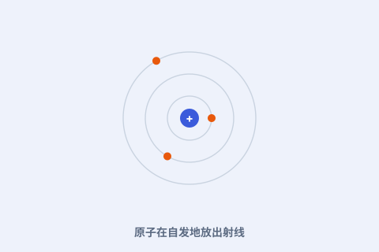
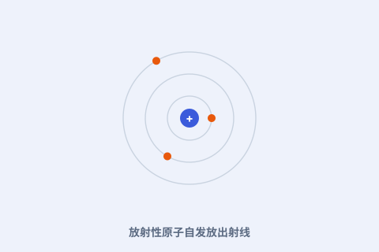
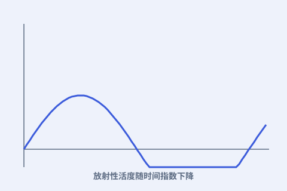

她从一吨矿渣里提炼出零点几克镭，发现放射性是一种原子自身的本领，并成为史上第一位两获诺贝尔奖、也是唯一横跨物理与化学的人。

点任意一张卡片，进入图文详解；看不懂的词，随时点开弹窗。

不是摩擦起电，而是原子“自己往外冒东西”。
一吨矿渣，换回一小管会发光的镭。

一半一半地少下去——这就是衰变的节律。
从实验室的射线，到战地医生的眼睛。
玛丽·居里（1867—1934），原籍波兰，在巴黎求学。她与丈夫皮埃尔·居里一起，打开了放射性研究的大门。
她先后发现两种新元素——钋（以祖国波兰命名）和镭；镭的发现源于她相信“放射性是原子本身的属性”，而非外界激发。
她两获诺贝尔奖（物理、化学），并把放射性用于医学。长期接触射线损害了她的健康，她却把一生交给了这门新科学。
看完整时间轴 →
面向中学生的科普小站：按时间顺序讲故事，把难词讲成人话。每个核心概念都能点开弹窗看通俗解释；想深入就读“详解页”；想动手就玩“实验”；不确定哪个词什么意思，去词典里搜。